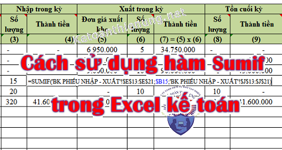
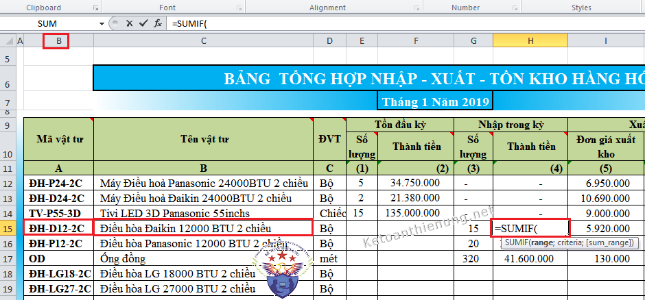
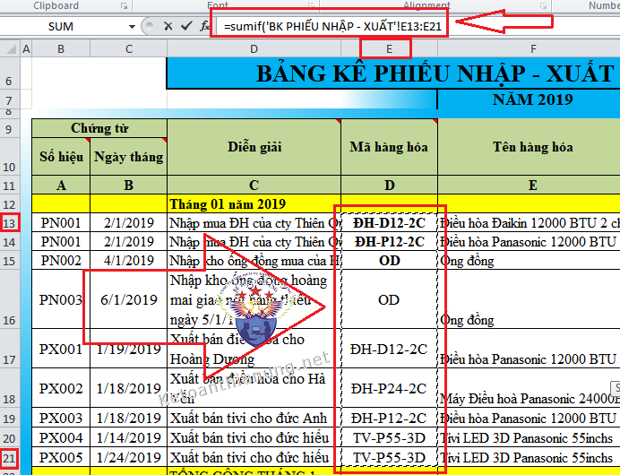
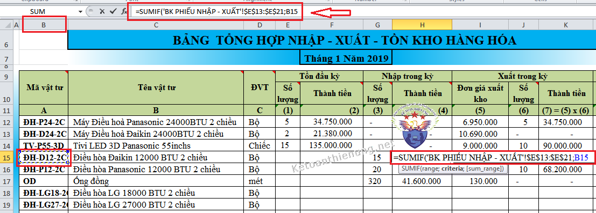
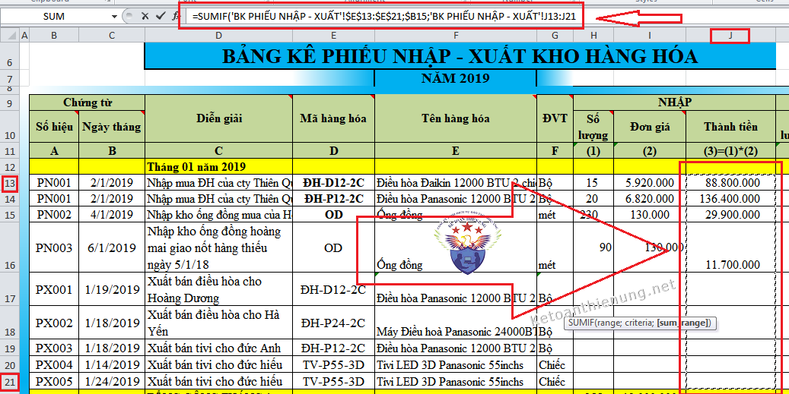

Hướng dẫn sử dụng hàm Sumif trong Excel kế toán như: Cách dùng hàm Sumif để kết chuyển các bút toán cuối kỳ, tổng hợp số liệu từ NKC lên bảng cân đối phát sinh, làm Bảng tổng hợp Nhập xuất tồn ...
1. Công dụng của hàm Sumif trong Excel kế toán:
- Kết chuyển các bút toán cuối kỳ
- Tổng hợp số liệu từ NKC lên Phát sinh Nợ Phát sinh Có trên Bảng cân đối số phát sinh tháng và năm
- Tổng hợp số liệu từ PNK, PXK lên “Bảng NHập Xuất Tồn “
- Tổng hợp số liệu từ NKC lên cột PS Nợ, PS Có của “Bảng tổng hợp phải thu, phải trả khách hàng”
- Và các bảng tính có liên quan..

------------------------------------------------------------------
2. Cách dùng hàm Sumif trong Excel kế toán:
Cú pháp hàm: Hàm có 3 tham số như sau:
Cú pháp: = Sumif (Dãy ô điều kiện; Điều kiện cần tính; Dãy ô tính tổng)
(Dấu chấm phẩy (;) hay dấu phẩy (,) là phụ thuộc vào từng máy tính).
- Dãy ô điều kiện: Là dãy ô chưa điều kiện cần tính.
Ví dụ: Cụ thể trong bài viết này: Là dãy ô chứa tài khoản trong cột TK Nợ/TK Có trên NKC, hoặc dãy ô chứa mã hàng trên Phiếu nhập kho, Xuất kho …vv
- Điều kiện cần tính: Phải có "Tên" trong dãy ô điều kiện.
Vi dụ: Cụ thể trong bài viết này: Là Tài khoản cần tính trên NKC hoặc mã hàng trên kho (bảng Nhập Xuất Tồn) hoặc TK cần tổng hợp trên bảng Cân đối phát sinh…. (Điều kiện cần tính chỉ là một ô)
- Dãy ô tính tổng: Là dãy ô chưa giá trị trong cột phát sinh Nợ hoặc phát sinh Có trên NKC, hoặc dãy ô chứa giá trị trong cột số lượng hoặc thành tiền trên kho (trên phiếu NK, XK ). Dãy ô tính tổng và dãy ô điều kiện phải tương ứng nhau, tức điểm đầu và điểm cuối phải tương ứng nhau.
Chú ý:
- Hướng dẫn khi muốn tuyệt đối dòng hoặc cột -> Tức là cố định dòng hoặc cột đó (việc tuyệt đối dòng hoặc cột là tuỳ vào từng trường hợp):
Bấn F4 (1 lần): Để có giá trị tuyệt đối cả cột và dòng (tức là cố định cột và cố định dòng đó ($cột$dòng);.
Ví dụ: $E$12 – tức là cố định cột E và cố định dòng 12.
Bấm F4 (2 lần): Để có giá trị tương đối cột và tuyệt đối dòng (tức là là cố định dòng, thay đổi cột (cột$dòng).
Ví dụ: E$12 – tức là cố định Dòng 12, không cố định cột E.
Bấm F4(3 lần): Để có giá trị tương đối dòng và tuyệt đối cột (tức là cố định cột, thay đổi dòng ($cột dòng).
Ví dụ: $E12 – tức là cố định Cột E, không cố định dòng 12.
-------------------------------------------------------------------
Ví dụ: Tính Cột "Thành tiền" nhập trong tháng của Mặt hàng "Điều hòa DAIKIN 12000 BTU 2 Chiều" có Mã là "ĐH-D12-2C" trên Bảng Nhập xuất tồn:
- Ta sẽ phải dựa số liệu từ Bảng kê phiếu nhập xuất trong tháng, cụ thể như sau:
Bước 1: Tại cột "Thành Tiền" trên bản Bảng Nhập xuất tồn Gõ: =sumif(
như hình dưới đây:

-> Tiếp đó là: Bấm chuột trái sang sheet Bảng kê phiếu nhập xuất để kéo vùng điều kiện, cụ thể là cột "Tên hàng hóa" từ E13 -> đến E21
-> Sau khi kéo xong kết quả sẽ là: =sumif('BK PHIẾU NHẬP - XUẤT'!E13:E21
-> Sau khi kéo xong kết quả sẽ là: =sumif('BK PHIẾU NHẬP - XUẤT'!E13:E21
như hình dưới đây:

Chú ý: Sau khi kéo chuột xong các bạn bấm phím F4 1 lần (để cố định vùng điều kiện đó).
-> Kết quả sẽ là: =sumif('BK PHIẾU NHẬP - XUẤT'!$E$13:$E$21
Bước 2: Sau khi đã bấm phím F4 1 lần và kết quả hàm đã như trên các bạn tiếp tục gõ cú pháp ; và quay về bảng Tổng hợp nhập xuất tồn để bấm chuột vào ô B15 (tức là điều kiện cần tính).
=> Kết quả sẽ là: =SUMIF('BK PHIẾU NHẬP - XUẤT'!$E$13:$E$21;B15
như hình dưới đây:

Chú ý: Sau khi bấm chọn xong Ô B15 (tức là Mã hàng hóa, điều kiện cần tính) các bạn bấm phím F4 1 lần để cố định ô đó lại nhé:
Kết quả sẽ là: =SUMIF('BK PHIẾU NHẬP - XUẤT'!$E$13:$E$21;$B$15
Bước 3: Các bạn tiếp tục gõ ; và sang Bảng kê Phiếu nhập xuất để kéo vùng tính tổng, cụ thể là Cột "Thành tiền" Từ J13 đến J21
Sau khi kéo xong kết quả sẽ là:
=SUMIF('BK PHIẾU NHẬP - XUẤT'!$E$13:$E$21;$B15;'BK PHIẾU NHẬP - XUẤT'!J13:J21
như hình dưới đây:

Chú ý: Sau khi kéo chuột xong các bạn bấm phím F4 1 lần (để cố định vùng tính tổng đó).
-> Kết quả cuối cùng sẽ là:
=SUMIF('BK PHIẾU NHẬP - XUẤT'!$E$13:$E$21;$B15;'BK PHIẾU NHẬP - XUẤT'!J13:$J$21)
Như vậy là đã tính được Cột "Thành tiền" nhập trong tháng của Mặt hàng "Điều hòa DAIKIN 12000 BTU 2 Chiều" có Mã là "ĐH-D12-2C" trên Bảng Nhập xuất tồn, các bạn nhé.
----------------------------------------------------------------------------------
Ví dụ: =SUMIF( $E15:$E180, 5111,$H$15:$H$180)
------------------------------------------------------------------------
Kế toán Diệu Tâm chúc các bạn thành công!
Xem thêm: Cách làm sổ sách kế toán trên Excel
__________________________________________________